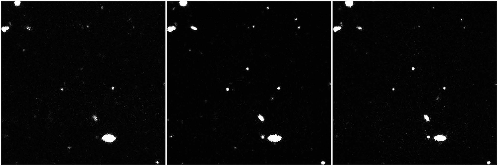
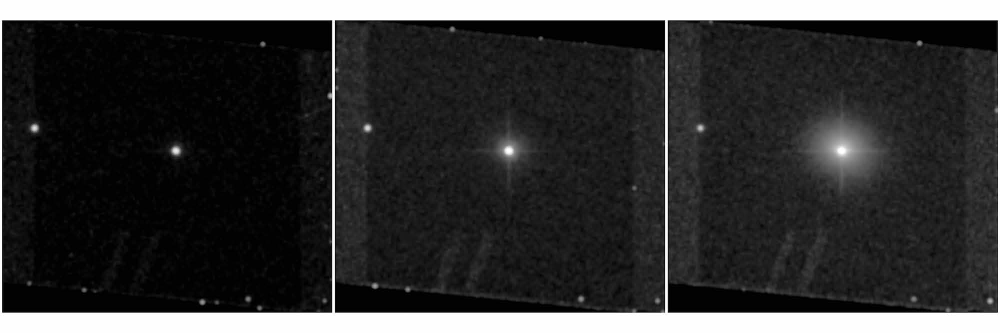

Coloring the Universe


Nearly everything astronomers know about the stars and galaxies in the Universe comes from the light we receive from these objects. Fortunately, that light contains a wealth of information. In this investigation, you will learn how astronomers use light and filters to understand things such as distant galaxies, dusty nebulae, and types of stars.
There are many types of electromagnetic radiation: radio waves, infrared, visible, ultraviolet (UV), X-rays, etc. Astronomers refer to all of these types of radiation as light. Each type of light has a specific range of wavelengths and energies. The type of light we can see with our eyes is called “visible” light.

Figure 1: the Electromagnetic Spectrum. Adapted from https://imagine.gsfc.nasa.gov/Images/science/EM-spectrum-full.jpg
Visible light consists of all of the colors of the rainbow, as shown below. You may have learned the acronym “Roy G. Biv” to remember the seven colors of the rainbow. The different colors correspond to different wavelengths and energies. Within the range of light we can see, red light has the lowest energy and the longest wavelengths; violet has the highest energy and the shortest wavelengths.

Digital cameras cannot see color. They can only measure the amount of light that illuminates the image sensor. To build a color image, we use filters. A filter is designed to allow only certain wavelengths (or colors) of light to pass through it. All other wavelengths (or colors) are blocked. Figure 2a shows an example of how an orange filter transmits some wavelengths of light while blocking others.
There are filters like this inside a digital camera (e.g., the one on a mobile phone). Tiny red, green, and blue filters are placed over the pixels of the image sensor as shown below in Figure 3b. When you take a picture, your camera measures light simultaneously through all three filters.


Figure 3a: Orange filter. Credit: P. Marenfeld (NOAO/AURA/NSF). Figure 3b: Diagram of an image sensor with filter arrangement. Credit.
To better understand how filters work, try out the filter tool below:
prism
white light →
Looking at a rainbow you might think that we need to use (at least) seven filters to produce a color image. But we actually only need three. This is because our eyes contain sensors called “cones” that collect red, green, and blue light. Our brain has a method for transforming the relative amounts of red, green, and blue light measured by the cones into a color image. This is known as the “three-color process.” Remarkably, our eyes can see over a million different colors with this method. Now let’s explore how the three-color process works.
Below there is a series of images. The first three are images obtained using red, green, and blue filters. As we mentioned before, digital cameras cannot see color, so each of the three images of filtered light starts out as a black and white image. A color (red, green, or blue) is then selected to colorize each of the filtered images, and finally, the three images are combined to create the color image.
Start by looking at the brightness of the boys’ shirts in the black and white images taken through each filter. Think about what is similar and what is different in them.

Figure 4: Comparison of the light passed by filters.
| Bright or dark? | Red shirt | Green Shirt | Blue Shirt |
|---|---|---|---|
| Red Filter | |||
| Green Filter | |||
| Blue Filter Filter |
Look for a pattern in the answers in the table above.
“The red shirt looks (bright/dark) in the image taken through the red filter because the red filter (passes/blocks) red light.”
Here are the same images, now colorized with their corresponding color, and the resulting image in full color:

Figure 4: Assignment of colors to filters.
This full color image appears in the color-mixing tool below. Try turning off colors one-by-one, and watch how the image changes. Next, adjust the sliders to change the color intensity of the image.
Try to recreate the color image above.
Constructing an Astronomical Image with Six FiltersPeople often wonder if astronomical images show an object “as it really looks”; that is, as it would appear to their eyes if they were close to it. Note that telescopes not only magnify distant objects, they also collect so much more light than your eyes that they reveal objects too faint for you to see. And often, telescope images are made from wavelengths of light that your eyes can’t see. These images therefore show us not what you would see, but what our telescopes can see. In a sense, telescopes give us superhuman vision. Indeed that’s the reason we build them!
The LSST camera contains six filters, identified by the letters u, g, r, i, z and y. Three of these filters (g, r, and i) pass the same wavelengths (or colors) of visible light that our eyes can see. The u filter passes ultraviolet light. Two of the filters allow only infrared light. These are kinds of light that our eyes cannot see. Ultraviolet literally means “above violet” and is too high in energy for our eyes to see. Infrared means “below red” and is too low in energy for our eyes to see. Although our eyes cannot see these kinds of light, the LSST camera is able to detect them.

Figure 5: Comparison of visible color wavelength ranges with LSST filters (nm = nanometers)
Astronomers use these extra filters because each type of light reveals different information about the Universe, so observing over all these wavelengths helps us to build a more complete story. For example, the u (ultraviolet) filter is especially useful in identifying quasars or tracing the gas released from comets, because both of these objects shine brightly at ultraviolet wavelengths.
Compare the images below to see (where a comet is giving off gas/which objects in this image are quasars.)
Figure 6: Credit Goes Here
The filters i, z and y pass increasingly lower energies (longer wavelengths) of light to pass through them. One of the uses of these filters is to see through dust, which scatters shorter wavelengths of light but passes the longer wavelengths of light.

Figure 6: Comparison of the Horsehead Nebula through a visible light filter (g band) with an infrared filter (y band).
Some galaxies are so distant that their light is stretched out to longer wavelengths. They are therefore only visible when observed through infrared filters.
Identify a distant galaxy in the images below.
Figure 7: Image taken with Subaru Hyper Suprime-Cam in r-i-z filters of a redshift 3.6 galaxy
Brown dwarf stars are very faint at visible wavelengths but appear bright when imaged through the infrared filters. Locate a brown dwarf star in the images below.
Figure 8: Credit Goes Here
We can use images taken through the six LSST filters to create a color image in a way similar to the three-color process. Let’s explore how this works.
This tool works in the same way as the (three-filter) color mixing tool, but it has the ability to use six colors. We will build an image of M33, a spiral galaxy.
Before assigning colors to each filter, it’s important to understand that there is a deliberate method for how astronomers build a color image. It is called chromatic ordering. Each color represents a specific type of wavelength information. The shortest wavelength of light used is assigned to the shortest wavelength of color, and so on. These images are not simply pretty pictures- they communicate information about specific aspects of the structure in the image. Professional astronomers know how to interpret the colors to gain scientific knowledge. Images constructed by using chromatic ordering are known as representative color images. In false color images, the assignment of colors is not ordered according to wavelength.
Since the u filter passes light with the shortest wavelengths, we will select violet as its color because violet has the shortest wavelengths of visible light. The g filter passes light with slightly longer wavelengths than u, so we will select blue, since it is the next shortest wavelength color. Continue on with these selections:
You will now see full color image of M33, made by combining the light from these six filters.
The blue areas show the locations of hot young stars. Pink and red clouds are active star-forming regions, while the yellow areas show where older stars reside.
Now it’s your turn to create a representative color image and use it to answer a question. Think about these points before you begin:
Directions for using the Six Color Mixing Tool
{kind=link}